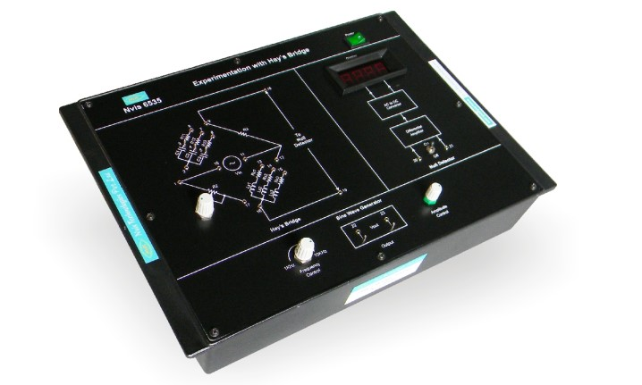

Experimentation with Hay's Bridge
Nvis 6535

Hay's Bridge
Hay's Bridge
Nvis 6535 Experimentation with Hay's Bridge is useful training product for measuring the value of unknown inductance.This product is useful for students to understand the concept and working of A.C. Bridges. Hay's bridge is a modification of Maxwell's bridge and is suitable for measuring inductance of inductors with high Q-factor. By setting the null point we can evaluate the unknown inductance value. Nvis 6535 has inbuilt differential amplifier, AC to DC converter and DPM for null detection. In built sine wave generator with amplitude and frequency variation facility is provided for the ease of operation.
Features
- In-built sine wave generator
- Adjustable frequency and Amplitude of Sine Wave
- Digital display for Null detection
- 10 turn potentiometer for balancing the bridge
- Easy illustration of Hay's bridge
Technical Specifications
- Mains supply : 230V ±10%, 50Hz
- Sine wave generator
- Frequency : 1kHz to 10kHz ±10%
- Amplitude : 0 to 5Vpp
- DPM : 0-200mV
- Unknown Inductors
- 58mH ±10% with 58O ±10% of resistance
- 100mH ±5% with 174O ±5% of resistance
- 116mH ±10% with 116O ±10% of resistance
- Dimensions (mm) : W 240 x D 345 x H 110
Scope Of Learning
Determination of unknown inductance and Q-factor using Hay's bridge method
To download the manual click here